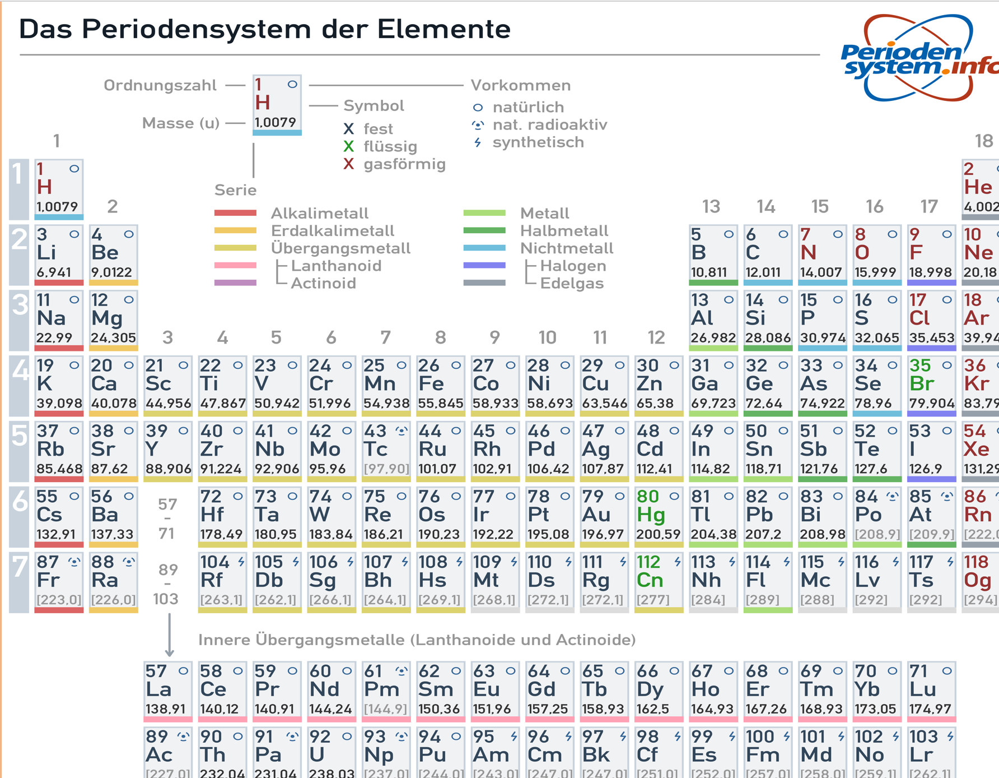

Wusstet ihr, dass Stickstoff sogar in Gülle und Urin vorkommt? Nein? Wir auch nicht, aber wir können euch sagen, dass Stickstoff ein wichtiger und sehr interessanter Stoff ist. Genauso wie Stickstoff, gibt es noch viele weitere Stoffe auf dieser Welt. Alle Stoffe dieser Erde bestehen aus Atomen, Ionen oder Molekülen.
Atome gelten als die kleinsten Teilchen unseres Planeten. Es gibt viele verschiedene Atome.
Atome mit der gleichen Anzahl an Protonen im Kern, ergänzen sich zu einem Element, wie zum Beispiel Wasserstoff (H)
Viele unterschiedliche und gleiche Atome ergänzen sich zu einem Molekül, wie zum Beispiel unserem Wasser (H2O).
Alle bisher erforschten Elemente finden sich im sogenannten Periodensystem (kurz PSE) wieder.
 Nächste Seite >